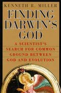

Yin and Yang of Kenneth Miller
How Professor
Miller finds Darwin's God
Amiel Rossow
Published on Darwin Day (February 12, 2006)
Contents

1. Introduction
The black-and-white symbol preceding the title of this section is what in Chinese philosophy is called T'ai-Chi T'u, which roughly translates as "Diagram of the Supreme Ultimate" and represents a concept named "yin-yang." Here is how it is defined by Fritjof Capra on page 27 in his immensely popular book Tao of Science [1], "Chinese philosophy... has always emphasized the complementary nature of the intuitive and the rational and has represented them by the archetypal pair yin and yang..." On page 106 he elaborates, "In the realm of thought, yin is the complete, female, intuitive mind, yang the clear and rational male intellect." The symbol of yin-yang implies that these two sub-concepts smoothly fit in with each other, their interplay entailing no contradiction but rather an intimate mutual adjustment.
It seems to me that the yin-yang concept aptly evinces the composition and the main thrust of Professor Kenneth R. Miller's book [2] titled Finding Darwin's God. (Miller himself does not use anywhere the terms yin and yang; their use in this article is exclusively my choice).
Kenneth R. Miller is a prominent cell biologist and teacher, the co-author of popular textbooks on biology and of scientific articles devoted to intricate problems of biological science. The book in question is though addressed to a mass audience and represents a very valiant effort by a very intelligent, knowledgeable and honest man to assert his heartfelt belief in what he himself succinctly expressed in the subtitle of the book, A Scientist's Search For Common Ground Between God And Evolution.
It could be anticipated that Miller's position would invoke ire from both sides of the religion - evolution controversy. While there are scores of scientists who successfully reconcile their religious beliefs with the operational agnosticism [3] of their everyday scientific work, most of them simply manage to separate their faith from their scientific pragmatism viewing them as two unrelated realms. On the other hand, many scientists who are either agnostics or atheists adhere to the position of the late biologist and essayist Steven Jay Gould, according to which science and religion are two "Non-overlapping Magisteria" [4] so they are not concerned with the reconciliation between religious beliefs and scientific empiricism which may be a problem for their religious colleagues.
Miller's position is not a tacit acceptance of the idea of the two nonoverlapping magisteria. His thesis is that he is firm in his faith not despite his acceptance of Darwinism, but, on the contrary, because, in his view, Darwin's theory supports his faith rather than contradicting it.
In this article my goal is to evaluate both the yang and yin parts of Miller's book, the yang being his masterful defense of Darwinism and the evolution theory and the yinhis assertion of his religious faith, and to see whether or not these two parts do indeed so smoothly fit in with each other as the T'ai-chi T'a diagram implies.
It is a common knowledge that both sides of the religion-evolution controversy have their extreme fringes. On the atheistic end of the spectrum we see such outspoken adversaries of religious faith as Richard Dawkins [5], Peter Atkins [6], and Daniel Dennet [7]. On the religious extreme we see such fervent haters of Darwinism as Phillip Johnson [8] and Jonathan Wells [9].
Since Miller's position is both pro-religion and pro-evolution, we could expect that his book would be disparaged from both sides of the controversy.
To be sure, attacks followed. However, all of them, often very vitriolic, came only from the camp of anti-evolutionists. The pro-evolution side, while meeting with approval the yang part of Miller's book (wherein Miller eloquently and with great erudition argued in favor of the Darwinian theory of evolution), mostly keeps silent about the yin part (wherein Miller argued in favor of his religious faith).
The creationist camp seems not to have been mollified to any extent by Miller's defense of his religious faith. Their hatred of Darwinism is obviously more important to them than solidarity with their fellow believers. In a book [10] Phillip Johnson, in his usual lawyer's style [11] pounced on Miller's book in a rude manner, wherein insults seem to be the prevalent substitute for logic and knowledge about the subject.
Here are a few examples of Johnson's assaults on Miller. On page 130 of his book [10] Johnson asserts that Miller's rendition of the position of creationists is a "caricature." (By the way, Johnson is offended by the appellation "creationist;" he likes to be called a "design theorist.") On page 131, Johnson says that Miller "grotesquely distorts the design concept," that he "does not recognize the problem of information creation." On page 133 Johnson tells the readers that "Miller's incomprehension of the information problem is particularly visible when he turns to embryonic development." It would be funny if it were not so obnoxious to hear the accusations of a highly competent professional scientist of "incomprehension" of this or that, coming from a lawyer whose own amateurish understanding, for example, of information, is egregiously inadequate (see, for example [11]). Moreover, Johnson is notorious for gross distortions of the views of those scientist he does not like, often misquoting or brazenly quoting out of context (see, for example [12]). However, I think Miller should not be offended since he is in good company: Johnson's arrogance extends even to accusing Einstein of lack of modesty and consistency (page 92 in [11]).
2. The narrative starts
The yin and yang parts in Miller's books are not strictly separated; elements of both are encountered throughout Miller's narrative. However, the first two-thirds or so of the book are overwhelmingly on the yang side of the narrative while the rest is prevalently on the yin side.
Before delving into the detailed discussion of his thesis, Miller tells the story of his education and his becoming strongly pro-evolution. He grew up in a family of Catholic believers and from the early childhood was steeped in the traditional Catholic worldview. There is little doubt that the emotions experienced in early childhood leave indelible marks in every person's mind and heart, and Miller hardly could be an exception. However, possessing a nimble mind and a keen sense of the importance of truth, he discovered the indisputable logic of the evolution theory whose main tenets, although appearing to contradict the teachings of Miller's Catholic instructors, seemed to be beyond a reasonable doubt.
With delightful clarity and brevity, Miller delivers the basics of the evolution theory in a few paragraphs, stressing the obvious factual foundation of that theory.
The basic concepts of Darwinism are exceptionally simple, given the immense scope of its implications. Miller briefly explains the three principal elements of Darwinian theory (pages 7-9): a) Domesticated plants and animals show a tremendous range of variations; b) A similar range of variations exists in nature among wild species; c) All living things are engaged in a struggle for existence. "This struggle, combined with variations, results in natural selection." A few lines further Miller continues, "Incredibly, that's all there was to it. In those principles you have all of Darwin's theory."
In the next several pages Miller tells about those writers who assert that accepting Darwinism entails abandoning religious faith (the view shared by many on both sides of the controversy). Now he defines the main goal of his book. He writes (page 17), "Is it time to replace existing religions with a scientifically responsible, attractively sentimental ethically driven Darwinism....? Does evolution really nullify all world views that depend upon the spiritual? ... My answer, in each and every case, is a resounding no... The reason, as I hope to show, is because evolution is right. "
As we see from the above quotations, Miller's goal is beyond the simple thesis that one may accept the evolution theory and still keep religious faith - a thesis which is considered by scores of scientists and laymen alike as non-controversial - it is to provide arguments in favor of faith based on the veracity of evolution theory! In this ambitious endeavor Miller would probably find not too many co-travelers.
To achieve his goal Miller's path had to be two-pronged. First he had to offer arguments in favor of evolution and show the lack of substantiation in the anti-evolution critiques (the yang of his narrative); second, he had to offer arguments in favor of his religious faith (the yin of his discourse). Moreover, he had to show that the yang and yin in his conceptual system do indeed smoothly fit in with each other.
Let us review how well Miller did the job he embarked upon and see whether or not he succeeded in all three components of his discourse.
3. Yang
After offering the simple schema of Darwinism, with its three easily comprehensible and evidently true elements, Miller proceeds to elaborate by providing a set of arguments in favor of the theory of evolution. In clear prose, with aptly chosen examples, he explains to his readers how science works. Demonstrating wide erudition often extending far beyond biology, Miller argues against creationists who insist that science is not capable of asserting anything about the past, because the past cannot be reproduced in a lab and directly observed. He compares scientific inquiry to criminal detection and points out that circumstantial evidence is often a highly reliable marker of the events which occurred in the past, for the "...present always contains clues to the past." (page 23).
In pages 23 through 56 Miller offers a fine argument in favor of the validity of evolution theory, wherein adherence to evidence is combined with entertaining manner of his narrative. Continuing, in chapter 3 titled God The Charlatan Miller explains how science has established the age of the earth (about 4.5 billion years) describing in a transparent way the methods based on the radioactive decay of isotopes, and decisively debunking the ridiculous assertions of the young earth creationists based on alleged data related to the magnetic field of the earth and other similarly unsubstantiated theses. In chapter 4 titled God The Magician Miller clarifies the alleged contradiction between Darwinism and the theory of "punctuated equilibrium" suggested by Steven Jay Gould and Niles Eldredge [13].
The theory in question has been widely exploited by the anti-Darwinian fighting force as a tool allegedly devastating to Darwinism. Miller convincingly shows that Gould-Eldredge's theory fits quite well in with Darwinism. While this theory has been opposed by many biologists like Richard Dawkins, this has occurred within the framework of normal, even if sometimes heated, scientific dispute, and regardless of the outcome of the dispute it will not destroy the theory of evolution, because if Gould-Eldredge's theory is true, it only will add fine details to Darwinism; if it is untrue it will be abandoned in the further development of science.
In his defense of the evolution theory Miller had to face adversaries of Darwinism and show that their attack has no justification in factual evidence. A large part of Miller's counter-attack is directed against several anti-Darwinists, like Henry Morris, David Berlinski, Michael Behe and Phillip Johnson.
While Miller's critique of Morris and Berlinski, as well as his general critical remarks regarding Johnson, are well substantiated and convincing, they do not stand out as especially original since similar arguments against the mentioned champions of anti-Darwinism have been forwarded by many other critics as well. Miller's critiques of Behe and of Johnson's specific assaults on Darwinian biology are a different story. Here Miller often offers original arguments that stem from his ken as a professional biologist.
On pages 92-115 Miller shows the egregious fallacy of Johnson's discourse, wherein the statement of Johnson's incompetence is strongly supported by hard data from paleontology (the fossils record).
Equally impressing is Miller's revealing the fallacy of Behe's concepts from a purely biological viewpoint. Although Behe is himself a professional biologist, a professor of biochemistry, Miller's encounter with Behe looks much like a fight of a bear with a puppy. Behe's notorious book [14] Darwin's Black Box, where he introduced his concept of Irreducible Complexity (IC) of biochemical systems, has been criticized in many articles, books, and reviews from various viewpoints - generally biological [15], specifically biochemical [16], probabilistic and complexity-theoretical, [17] and others [18]. Miller's contribution to that critique seems to be among the best substantiated and most convincing, and distinct in that it comes from a person highly knowledgeable in the intricacies of the biological details which are essential for the judgment on the validity of Behe's discourse. (Miller also indicates that he consulted with Russell Doolittle in regard to his discussion of the blood clotting cascade; Professor Doolittle is the foremost expert in blood clotting which Behe chose as one of examples of IC; hence, although himself a very knowledgeable cell biologist, Miller, in his analysis of Behe's concept, used also the expertise of other specialists, thus giving even more weight to his revelation of Behe's fallacies.)
Here are the main points of Miller's critique of Behe.
In chapter 6 titled God The Mechanic, Miller demonstrates the lack of substantiation in Behe's main thesis. Briefly, that thesis can be descried as follows. A biological cell contains a very large number of what Behe calls protein machines. This term denotes complex combinations of multiple protein molecules working together and each performing a certain function vital for the cell's existence as part of a living organism. This assertion is obviously true, and Miller lists several such machines, "These include the pathway of signaling proteins in the light-sensitive cells of our eyes, the intricate cascade of proteins that cause blood to clot, the incredibly flexible antibody-producing machinery of our immune system, and the vital chemical pathways that are used to produce compounds essential for each living cell." Behe further asserts that many of these protein machines are "irreducibly complex." This term in Behe's usage means that the removal of even a single protein from a particular "machine" will render it dysfunctional. The main point of Behe's thesis is that irreducibly complex systems could not evolve via a Darwinian process of descent with modification because natural selection, which is an essential part of Darwin's theory, can only work on an existing system performing some useful function. Since an irreducibly complex system "by definition" has no functional precursors, it cannot be a product of natural selection.
Obviously, Behe's assertion could be shown to be wrong in at least two ways. First, if it can be shown that the protein machines used as examples by Behe are not irreducibly complex, i.e. that the removal of some of their parts does not render them dysfunctional, this would work strongly against Behe's theory. Second, if it can be shown that the protein machines, even if they seem to meet Behe's definition of irreducible complexity, still could have evolved via a Darwinian path, this would decisively debunk Behe's thesis.
Critics of Behe's theory utilized both ways. Some of them cast doubt on the very existence of irreducibly complex machines and offered evidence that the systems Behe claimed to be irreducibly complex actually can work even if some of their proteins are removed. This type of argument points to evidence that protein machines more often than not possess redundant complexity rather than irreducible complexity [19].
Miller also uses this type of argument. For example, he writes (page 140), "As a cell biologist, I was particularly amused by a biochemist's suggestion that the complexity of the cilium is irreducible." He provides examples of various "designs" of cilium, all of which successfully perform the same function despite variations in the protein composition of the cilium, thus demonstrating the fallacy of Behe's assertion.
He also shows that all the listed protein machines, whether or not they meet Behe's definition of irreducible complexity, could very well have evolved via a Darwinian path entailing natural selection. One by one, Miller demonstrates how each of the allegedly irreducibly complex system could have evolved from precursors via descent with modification, led by natural selection. The sonar system of the bats, the human eye, the blood clotting cascade and a number of other systems are analyzed and it is shown that they can be reasonably attributed to a Darwinian evolutionary process.
Whereas some of Miller's arguments against Behe's concept, although well articulated and convincing, are not much different from arguments offered by other critics, there is in Miler's book at least one notion which, to my knowledge, has not been suggested by any other of Behe's detractors and which constitutes a devastating blow to Behe's conceptual construct. It is found on pages 161-163.
"The fatal blow to Behe's thesis comes, ironically, from Behe himself," writes Miller on page 161. A few lines further, Miller adds, "Behe makes the fatal theoretical mistake of taking himself a little too seriously." These statements, with all of their polemical sharpness, seem well justified by Miller's subsequent analysis of one of Behe's ideas. Behe's idea is that all the diversity of the biological world was potentially contained in the "first cell" made by the mysterious "designer" (whom Behe avoids naming God) some four billion years ago. This first cell, according to Behe, already held the designs of all the irreducibly complex systems found in the present-days cells of living organisms, but these systems were not yet "turned on."
Miller convincingly shows the absurdity of Behe's hypothesis. He writes, "If we choose to give Behe's theory serious consideration, if we treat it as a scientific hypothesis, then we are obliged to ask what would happen to those preformed genes during the billions of years to follow? As any student of biology will tell you, because those genes are not expressed, natural selection would not be able to weed out genetic mistakes. Mutations would accumulate in these genes at breathtaking rates, rendering them hopelessly changed and inoperative hundreds of millions of years before Behe says that they will be needed."
Miller concludes the paragraph with a statement that leaves no route to the salvation of Behe's "theory": "The result is an absolutely hopeless genetic fantasy of 'preformed' genes waiting for the organisms that might need them to appear gradually - and the utter collapse of Behe's hoped-for biochemical challenge to evolution."
Miller's assault upon Behe's concept is informed, often elegant, well supported by many examples and justifiably results in a categorical succinct assertion (page 150) "...the notion of irreducible complexity is nonsense."
It should be noted that the quoted statement does not mean that Miller denies the very possibility that certain systems can indeed be irreducibly complex in that all their parts are necessary for the system being functional. Miller's rejection of the irreducible complexity concept actually relates to its rendition by Behe who uses that concept to assert the alleged impossibility of the evolution of protein machines via Darwinian mechanism.
The quoted statement stands alone in Miller's book - he usually is restrained and respectful of various views regardless of whether he shares them or not. However, given Miller's strong and clearly articulated arguments against Behe's theory, the above categorical statement seems to be fully justified.
Overall, Miller lays bare the futility of Behe's idea and shows that the latter is just the worn-out and very old argument from design dressed in a biochemical mantle.
It is no surprise that Miller's book became a target of ferocious attacks from the creationist camp (as can be exemplified by Johnson's rude anti-Miller diatribes [10]). These attacks show that Miller succeeded in hitting the anti-evolution crowd very painfully, revealing the abject futility of their position.
Having dealt with the anti-evolutionists and inflicted devastating blows on them in the yang part of his book, Miller then proceeds to the yin part wherein he sets a goal - to justify his religious faith as supposedly supported by the data of science. Let us see how he succeeded in that endeavor.
4. Yin
The yin part of Miller's book wherein his goal is to assert his religious faith as supposedly supported by scientific data, differs drastically from the yang part where he defends evolution and debunks its critics. The yin part is more of a theological character and is long on repetitive arbitrary assertions but short on factual or logical substantiation. We do not see in the yin part any empirical data which would testify in favor of Miller's Christian faith, nor any logical discourse wherein a certain clearly stated premise is followed by a logical sequence of notions leading to a conclusion. What we see, instead, is a display of an intelligent and insightful mind desperately trying to prove to himself that his religious faith has a rational foundation. I don't believe skeptics will be swayed by Miller's pro-faith arguments. This is not because his arguments are doubtful or weak, but simply because there are no arguments at all, just assertions not supported by evidence but repeated time and time again with a boring persistence.
Let us look at some of the notions Miller discusses in order to prove his thesis that science is "the best friend" of faith.
One line of Miller's supposed proof of the validity of his faith is in appealing to the modern physics, in particular to the quantum indeterminacy found by science in nature. Although Miller's narrative in this part is mostly factually correct, it exaggerates the consensus among physicists in regard to the mentioned indeterminacy. In fact, the problem of indeterminacy in the quantum world continues to be a subject of dispute among scientists. Many of them (for example the late Richard Feynman [20]) are indeed of the opinion that events on a subatomic scale are of a non-deterministic nature. In Feynman's words, nature itself "does not know" what the outcome of an event will be (for example, through which slit an electron will pass if encountering a partition with two slits in it). There is, though, a competing view (championed, for example, by Bohm, and Bohm and Hiley [21]) according to which nature does know the outcome of an event, in the sense that any outcome is predetermined by the hidden parameters which are not known to the observer. The verdict has not yet been final on that matter. If Bohm's view will one day triumph, the foundation of Miller's argument would collapse.
However, even if Feynman's view prevails, this in itself will not justify Miller's contention. Whether there are hidden parameters or the subatomic events are indeed non-deterministic, both views may be interpreted if desired as an argument in favor of the creation of the universe by God, but can equally be interpreted in many other ways. The non-deterministic character of quantum world, if it is indeed such, does not entail any theological consequences. It is equally compatible both with faith and the lack thereof. Of course Miller is entitled to draw any conclusions he is inclined to, but they have no evidentiary value for skeptics unless he can offer factually and logically uncontroversial evidence in favor of his position. There is none. Whether the universe we live in is a Newtonian fully deterministic one or it is non-deterministic on the subatomic level, neither option requires the hypothesis of a supernatural creator for which there is no evidence that would satisfy the requirements of scientific rigor. Whatever the data of science do (or will) show, science has no tools to answer the question of the existence or non-existence of God or gods. Therefore we have to follow Ockam's razor and avoid making arbitrary hypothesis as long as we wish to stay within the framework of logic and factual evidence.
The best Miller is able to assert by way of argument is that quantum indeterminacy is compatible with his faith. I don't believe anybody would argue against such an assertion. However, quantum indeterminacy, if it indeed is a fact, is equally compatible with the lack of religious faith. Given Miller's evident great intelligence and eloquence, the paucity of real arguments in the yin part of his book seem to affirm the suspicion that real arguments in favor of faith which would be on a par with arguments normally accepted as legitimate in a scientific dispute, simply do not exist.
Let me discuss some of details of Miller's discourse in those parts of his book where he tries to convince readers in the validity of his religious faith.
Indeterminacy and randomness
On page 212 Miller writes, referring to anti-evolutionists, "Part of their problem surely comes from the act of confusing 'random' with 'indeterminate.' In ordinary speech, when we say that something is random, we generally mean that anything can happen, with all outcomes having equal probabilities... Physical events, generally speaking, are not at all random in this sense because all outcomes are not equally probable... Events at the atomic level are indeterminate, but not random - they follow understandable statistical pattern, and those pattern are the ones we sometimes elevate to the status of physical laws."
While I have no intention of defending the position of anti-evolutionists who often indeed display miscomprehension of randomness, unfortunately Miller's own treatment of randomness is on amateurish level. Of course, we may not demand from a cell biologist cognizance of intricate concepts of mathematics, so Miller's dilettantism in this particular instance can be readily forgiven, especially in view of his overall good level of presentation of non-biological matters. However, since his discourse in regard to randomness is part of his overall effort to support his religious beliefs with data of science, we cannot fail to notice the weakness of his pro-faith argument.
In fact, whatever the meaning of randomness in "ordinary speech" may happen to be, randomness is not an equivalent of equiprobability. There may be various degrees of randomness, and it has to be defined independent of equiprobability since the latter obviously cannot have various degrees. Outcomes may be either equally probable or not equally probable, with no tertiary quid.
Randomness is rigorously treated in the algorithmic theory of information/complexity [22]. First, unless we deal with an infinitely large system, we never can be confident that a system is indeed genuinely random. That is why the terms "pseudo-random" or "quasi-random" are common, for example, in computer science. According to algorithmic theory, randomness is defined via the concept of complexity (often referred to as Kolmogorov complexity). A detailed discussion of Kolmogorov complexity and its relation to randomness is beyond the scope of this article. I have mentioned this point as an illustration of how Miller's discourse deteriorates as soon as he leaves his fight against anti-evolutionists and turns to his unconvincing effort to show that his religious faith is supported by science.
Indeed, as Miller continues his discourse he tries to build a bridge from his interpretation of randomness to the supposed "key feature of the mind of God" (page 213). This key feature, in Miller's opinion, is "indeterminacy" which, as Miller says, anti-evolutionists "misconstrue as randomness."
From a skeptic's standpoint Miller's argument sounds arbitrary, since the "indeterminacy" of the subatomic world (which is still a subject of disputes among physicists) does not require a hypothesis of a supernatural creator of the universe. Miller concedes that quantum physics does not prove the existence of a Supreme Being (page 213). However, since the "indeterminacy" puts a limit on what science can ever reveal about the real world, this, in his view, points to a "Creator who fashioned it to allow us the freedom and independence necessary to make our acceptance or rejection of His love a genuinely free choice."
While I realize that Miller's thesis exemplified by the above quotation may be greeted with a heartfelt approval by millions of believers, to my mind of a skeptic the attempt to use quantum physics as a theological argument sounds unsubstantiated. While in his yang part Miller's arguments were all based on factual evidence and transparent logic, in his yin part he resorts to obviously arbitrary assumptions. If we apply Ockam's razor, there is no basis for introducing the extraneous hypothesis of a supernatural Creator which has no foundation in any scientific data. Miller and millions of other believers are satisfied that the data of science can be viewed as compatible with their faith, and that is, of course, a personal choice for each individual. Millions of people adhered to various religions long before the advent of modern science, including quantum physics. Miller's entire discussion of indeterminacy does not seem to have any relevance to the question of God's existence. Science has no tools to decide the question of God's existence, and Miller's attempt to mobilize the scientific arguments to support his faith is as fruitless as it is feeble. It contrasts drastically with his brilliant effort in defending evolution and disproving the creationists.
Excursions into theology
On pages 217-218 we find Miller's excursion into theology. In my view Miller's thesis at this point becomes quite obscure, as it is delivered in a way atypically nebulous as compared with the overall eloquent and transparent argumentation found in most of the chapters and paragraphs of his book. Here is a quotation illustrating my remark. On page 218, concluding his theological excursion, Miller writes, "In the traditional view of God's power held by all Western religions, God's presence and His power are part of the continuing truth of existence. What this means, in plain and simple terms, is that ordinary processes, rooted in the genuine materialism of science, ought to be sufficient to allow for God's work - yesterday, today, and tomorrow."
I am not interested in analyzing the dubious thesis that "all Western religions" share the same attitude to the God's presence and power. Miller seems to paint here with too wide a brush, but this is neither here nor there. The entire assertion seems to be of little meaning. For example, what is the meaning of the expression "continuing truth of existence?" In my view there is none. It looks like Miller, having set out on the job of showing that the materialistic science supports his religious faith, found himself at loss, and therefore resorted to an assertion which, although seemingly sophisticated and evincing some hidden meaning, is actually empty of content.
Discussing "all Western religions," Miller is sometimes not quite accurate in referring to their tenets (this, again, contrasts with his very accurate references to the essence of evolution theory in his yang part). For example, on pages 223 through 226, Miller discusses the big bang and asserts that the modern cosmological science supports the thesis of our universe having a beginning: "...science has confirmed, in remarkable detail, the distinctive beginning that theology has always required." This statement is imprecise from the viewpoints of both theology and science.
Since Miller puts in one hat all "Western religions," obviously Judaism is one of the religions falling under his classification. However Judaic theology, since its earliest rabbinical authorities, asserted that our universe was preceded by earlier universes. Nature, according to that concept, has either existed always or at least for a much longer period of time than our universe, as a sequence of worlds replacing each other. Here is, for example, a quotation from an early Talmudic commentary on the Torah [23]: "God created and destroyed worlds, none of which he liked, until he found this one." Christian theology abandoned that concept of Judaic theology, but Miller seems not to realize that there are serious distinctions even between various Western religions, and hence provides no reason why his particular version of faith should be preferred to other versions.
In yet another excursion into theology, Miller asks (and tries to answer) the question of the seeming incompatibility between the concept of God who has created the world according to a plan and with a purpose and the indisputable role of random factors both in the physical world and the human affairs. For example, on page 233 we read, "If evolution really did take place, then God must have rigged everything. Otherwise, how could He have been sure that evolution would have produced us?" Strangely, Miller, so logical in the yang part of his discourse, ignores here the obviously more parsimonious conclusion - there is no need to assume the existence of God to explain the evolution. By assuming the existence of a supernatural creator, he puts himself in a position where he has no reasonable answer to his question. His only answer, which has been heard many times before and which does not really answer anything, is that (page 236) "God's means are beyond our ability to fathom... "If I recall correctly, this thesis had already been offered about two millennia before our time: "My thoughts are not your thoughts, neither are your ways My ways, saith the Lord. For as the heavens are higher than the earth, so are My ways higher than your ways" (Isaiah 55:8). This statement may be viewed as a great poetry, but has no real evidentiary or explanatory significance.
Actually, with a strange inconsistency, a few paragraphs later Miller, again, admits that his supposed explanation does not explain anything. On page 239 we read, "...miraculous is beyond explanation, beyond our understanding...Miracles, by definition, do not have to make scientific sense." If that is so, why should we believe in miracles whose occurrence is supported only by ancient legends without a verifiable proof? Miller the believer obviously applies to his beliefs the criteria which are different from those he applies to the findings of science. When he writes about evolution, he strictly adheres to well-substantiated evidence. When writing about his faith, he does not offer any evidence, appealing instead to assumptions lacking parsimonious content.
Excursions into cosmology
When Miller turns to cosmology, again his statements (pages 224-226) oversimplify the matter. He interprets the evidence for the occurrence of the big bang as evidence that our universe had a distinct beginning at some point in time about 12 to 15 billion years ago. On page 225 he writes, "One of the most remarkable findings of cosmological science is that the universe did have a beginning."
Even if we ignore a number of cosmologies which have been offered as alternatives to the theory of an inflationary hot big bang (such as the cold big bang theory, the symmetric matter-antimatter theory, the variable G theory, the tired light theory, the shrinking atoms theory, the theory of eternally oscillating universe, and others), the prevalent theory of the big bang does not necessarily imply a beginning of our universe at some point of time. There are several interpretations of the big bang [24] which do not require a distinct beginning for our universe. There are also hypotheses of the possible existence of a preceding universe or many preceding universes. Of course these hypotheses, including those assuming the existence of preceding universes, are not supported by direct empirical evidence, but in that they are no worse than Miller's hypothesis of a Creator. On the other hand, some of the hypotheses which deny the distinct beginning of time [24], unlike the hypothesis of a supernatural creator, offer scenarios which potentially may be tested in the subsequent development of science and which have explanatory power absent in the hypothesis of a supernatural creator. Miller provides no arguments in favor of his belief in a supernatural creator which would reasonably compete with the hypotheses not assuming such a creator. The latter, although speculative, at least suggest certain arguments of theoretical nature which are absent in Miller's assumption of a supernatural creator.
Anthropic coincidences
On pages 227 through 232 Miller discusses the so-called anthropic coincidences. His discussion of that matter is on such a level that it is hard to believe it belongs to the same author who so brilliantly discussed evolution on the preceding pages of the same book.
There exists a large body of publications about the Anthropic Principle - a term introduced by Brandon Carter in 1973 - which is based on the observation [25] that the universe seems to be extremely well "fine-tuned" for the existence of life. Miller writes (page 228), "... the very fact that we are here to make a fuss means that the physical constants of the universe were set up in a way that made our existence possible."
I submit that the values of the physical constants, which seem to be precisely what they must be to enable the existence of life, in no way substantiate Miller's notion that these values were intentionally "set up." On the contrary, if life existed despite the values of those constants being non-conducive to the existence of life, this would logically support the hypothesis that a supernatural power was necessary to create life against the natural odds. If, though, the physical constants happen to be so precisely "fine-tuned" for the existence of life, there is nothing surprising that life indeed does exist in such a hospitable universe, thus requiring no arbitrary hypothesis of a supernatural source of life.
Continuing, Miller asserts that unbelievers among scientists are in an "anthropic trap." This is a wishful thinking. There is no "anthropic trap" for a number of reasons, one of them being the above simple logical conclusion which shows that the supernatural interpretation of the "fine-tuning" is an example of a circular reasoning.
Arguments against the supernatural interpretation of the anthropic coincidences have been advanced from various viewpoints [26, 27, 28, 29], but Miller limits his discussion to a few selected arguments, such as those offered by Dennett [30] which are by no means among the most telling ones. He leaves without discussion many other, much stronger arguments [26, 27, 28, 29].
Concluding his discussion of anthropic coincidences, Miller actually admits that the very existence of life presupposes the "fine-tuning" of our universe for life's existence. He writes (page 232), "...we knew that we existed, and that alone should have told us, from the beginning, that our universe was one that made life possible. Therefore, we should not be even slightly surprised to learn that the physical constants of gravity, electromagnetism, and the nuclear forces are compatible with life." This seems to be a very reasonable statement. However Miller continues, "Nevertheless, if we once thought we had been dealt nothing more than a typical cosmic hand, a selection of cards with arbitrary choices, determined at random in the dust and chaos of the big bang, then we have some serious explaining to do."
The second statement has no logical connection with the first one. If we "should not be even slightly surprised" by anthropic coincidences, why do we need any explanation? Explanation is needed when we are surprised. If we are not, we need no explanation. This is a simple logic and Miller strangely seems not to notice the inconsistency of his position on that point.
The boring ruminations
As Miller proceeds beyond his discussion of anthropic coincidences, somewhere around page 250 and further, his discourse deteriorates into lengthy and repetitive ruminations regarding the interpretations of the book of Genesis, and similar subjects. Time and time again we see here statements which clearly contradict each other and merge into a nebulous din of little interest.
Miller has noticed the discrepancies in the book of Genesis, like those between Genesis 1 and Genesis 2 which provide incompatible stories about the order of creation of plants, animals and humans. His explanation? The book of Genesis is not about science, it is about spiritual matters. Those who see in the book of Genesis just plain words of ancient writers who had no knowledge of the universe beyond the narrow experience provided by their senses, in Miller's view are guilty of an "extreme literal reading" (page 270). However, he offers no clarification how the supposed hidden spiritual essence of the book of Genesis can be extracted from its apparent contradictory narrative about the six days of creation. Without such clarification, all Miller's mantras about reason supporting his faith remain just words with no evidentiary value.
Here is an example of an inconsistency in Miller's yin part: On page 272 Miller writes about the history of evolutionary development and concludes as follows, "Surely this means that mankind's appearance on this planet was not preordained, that we are here not as a product of an inevitable procession of evolutionary success, but as an afterthought, a minor detail, a happenstance in a history that might just as well have left us out. I agree."
How this statement can be reconciled with the fundamental tenets of Christian religion is beyond me (using Miller's own words on page 172 which he applied to his bewilderment at Dembski's position). This is a question of simple logic which points to the incompatibility between the statement that the existence of human intellect is a minor detail, a happenstance in history, and the fundamental principle of Judeo-Christian and Islamic faiths according to which humans are the product of a purposeful, deliberate, planned action by God. Miller fails to explain how the two incompatible views can be reconciled.
I believe the above example suffices to show that a detailed discussion of Miller's effort to substantiate his thesis of complete harmony between his Catholic faith and his scientific views would be hopelessly fruitless.
5. Conclusion
Miller is certainly entitled to his beliefs, whatever they may be. There is no reason to doubt his sincerity. There is a good reason to admire the larger, yang part of his book. There seems to be no reason to take seriously the smaller, yin part.
6. References
[1] Fritjof Capra, The Tao of Physics. An Exploration of the Parallels between Modern Physics and Eastern Mysticism. Shambhala Publications, Boston 2000.
[2] Kenneth R. Miller. Finding Darwin's God. A Scientist's Search For Common Ground Between God and Evolution. Cliff Street Books, New York, 1999.
[3] Mark Perakh. Incompatible Magisteria.. Accessed on October 10, 2002. See also Faith vs. Science.
[4] Stephen Jay Gould, Nonoverlapping Magisteria. Natural History, March 1997. Also reprinted in coll. Intelligent Design Creationism and Its Critics, ed. by Robert T. Pennock, MIT Press, Cambridge, MA, 2001, p.737.
[5] Richard Dawkins. The Blind Watchmaker. W.W. Norton. New York, 1986.
[6] Peter W. Atkins. The Creation. W. Freeman Publishers, Oxford, UK, 1981.
[7] Daniel C. Dennet. Darwin's Dangerous Idea. Simon and Schuster, New York, 1995.
[8] Phillip E. Johnson, Darwin on Trial. InterVarsity Press, Downers Grove, Ill, 1993.
[9] Jonathan Wells, Icons of Evolution: Science Or Myth. Why Much We Teach About Evolution Is Wrong. Regner Publishing, distributed by National Book Network, Lanham, Maryland, 2000.
[10] Phillip E. Johnson, The Wedge of Truth. Splitting the Foundation of Naturalism, InterVarsity Press, Downers Grove, Ill, 2000.
[11] Mark Perakh. A Millitant Dilettante in Judgment of Science. Accessed on October 10, 2002. See also Faith vs. Science.
[12] Brian Spitzer. The Truth, the Whole Truth, and Nothing But the Truth?. Accessed on October 10, 2002.
[13] Steven Jay Gould and Niles Eldredge, Punctuated Equilibrium Comes of Age. Nature, 366 (1993). 223-227.
[14] Michael J. Behe. Darwin's Black Box. The Biochemical Challenge to Evolution. Simon and Schuster, New York, 1996.
[15] David W. Ussery. A Biochemist's Response to 'The Biochemical Challenge to Evolution. Bios, 70:40-45, (1999). Also online. Accessed on October 10, 2002.
[16] Russell F. Doolittle. A Delicate Balance. Boston Review, v. 22, No 1, 1997, p.28.
[17] Mark Perakh. Irreducible Contradiction. Accessed on October 10, 2002. See also Faith vs. Science.
[18] H. Allen Orr, Review of M. Behe's Darwin's Black Box. Boston Review, v.21, Dec-Jan, 1996-97.
[19] Niall Shanks and Karl H. Joplin, Redundant Complexity: A Critical Analysis of Intelligent Design in Biochemistry. Philosophy of Science, 66 (2) (June 1999): 268.
[20] Richard Feynman. The Character of Physical Law. The Modern Library. New York. 1994.
[21] (a) David Bohm and Basil J. Hiley. The Undivided Universe. Routledge Publishers, 1993. (b) David Bohm. Wholeness and the Implicate Order. Routledge Publishers, 1995 [1980].
[22] Gregory J. Chaitin. (a) Algorithmic Information Theory, Cambridge University Press. 1987. (b) Gregory J. Chaitin. Exploring Randomness, Springer Verlag, London. 2001.
[23] Genesis Rabba, 3:7.
[24] Victor J. Stenger. Intelligent Design: the New Stealth Creationism. Accessed on October 10, 2002.
[25] Brandon Carter. Large Number Coincidences and the Anthropic Principle in Cosmology. in M. S. Longair, ed., Confrontation of Cosmological Theory with Astronomical Data. Dordrecht: Reidel, 291-298, 1974.
[26] Mark Perakh. Anthropic Principles - Reasonable and Unreasonable. Accessed on October 10, 2002. See also Faith vs. Science.
[27] Victor Stenger. Natural Explanation for the Anthropic Coincidences. Accessed on October 10, 2002.
[28] Michael Ikeda and Bill Jefferys. The Anthropic Principle Does Not Support Supernarturalism. Accessed on October 10, 2002.
[29] Victor J. Stenger. Anthropic Design: Does the Cosmos Show Evidence for Purpose?. Accessed on October 10, 2002.
[30] Daniel Dennet. Darwin's Dangerous Idea. Simon and Schuster. New York. 1995.
The article was initially published in TalkReason.org